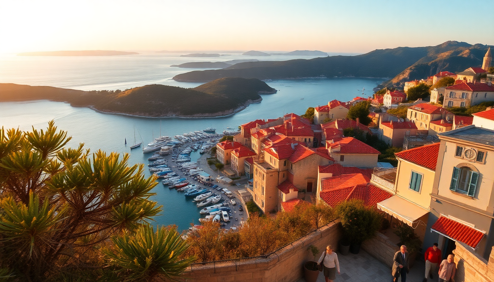

Best Time to Visit Croatia’s Dalmatian Coast: A Seasonal Guide

I’ve been to the Dalmatian Coast three times—once in July, once in May, and once in late September. Each trip felt like a completely different place. The July version was sun-scorched, packed, and expensive. The May version was green, quiet, and affordable. The September version was warm enough to swim and empty enough to get a table at Konoba Marjan without a reservation. This guide breaks down what you can actually expect in each season across Dubrovnik, Split, Hvar, and Zadar.
What is the weather like on the Dalmatian Coast month by month?
The Dalmatian Coast has a Mediterranean climate, but the difference between shoulder season and peak summer is stark. From June through August, temperatures in Dubrovnik and Split regularly hit 30°C (86°F) with zero cloud cover. The sea is bathwater warm—around 25°C—which is great for swimming but not for sightseeing on foot.
May and September are the sweet spots. In May, highs hover around 22°C, and the islands like Hvar are covered in wildflowers. September holds onto summer heat well into the month, but the crowds thin after the first week. October cools down fast—expect 18°C highs and more rain, especially in Zadar and Split. Winter (November to March) is quiet and often rainy. Many ferry routes to Hvar and the outer islands stop running entirely.
- May and June are ideal for hiking the city walls of Dubrovnik without baking.
- July and August are best for beach clubs in Hvar and late-night swimming in Zadar.
- September offers the best balance of warm sea and manageable crowds in Split.
- October is fine for walking tours in Dubrovnik but risky for island hopping.
When is the best time to visit Dubrovnik without the crowds?
I made the mistake of visiting Dubrovnik in August my first time. The Stradja was a river of people by 9 AM. Queueing for the City Walls took 45 minutes, and the temperature on the exposed ramparts hit 35°C. Never again.
The best window is late April through early June, or mid-September through October. In May, I walked the walls with maybe fifty other people total. I had Buža Bar—the cliffside drink spot—almost to myself at sunset. Hotels near Pile Gate, like the Hotel Excelsior, drop their rates by nearly 40% in May compared to July. The cable car to Mount Srđ runs on a reduced schedule in shoulder months, but the views are just as good without the selfie-stick gridlock.
- May is perfect for exploring the Old Town and Fort Lovrijenac.
- September still has warm sea temps for swimming at Banje Beach.
- Avoid July and August unless you booked accommodation six months ahead.
Is Split better in summer or shoulder season?
Split is a working city, not just a tourist attraction, so it feels less artificial than Dubrovnik even in peak season. But the Diocletian’s Palace gets claustrophobic in July. I remember weaving through tour groups in the Peristyle, unable to stop and read a plaque without being bumped.
I prefer Split in late May or early October. In May, the Riva waterfront is lively but not packed. You can get a table at Konoba Marjan—my favorite local spot for grilled fish—without a wait. In October, the sea is still swimmable at Bačvice Beach, and the Marjan Forest Park is perfect for a hike without sweating through your shirt. Ferry connections to Hvar and Brač run less frequently in October, so check the Jadrolinija schedule before planning island day trips.
- May is ideal for day trips to Krka National Park (waterfalls are full from snowmelt).
- September offers warm evenings for bar-hopping in Varoš neighborhood.
- October is good for budget travelers—apartment rentals near the Riva drop sharply.
When should I visit Hvar for nightlife versus quiet relaxation?
Hvar town has split personality. From June to August, it’s a nonstop party. The yacht crowd fills Carpe Diem beach club, and the main square buzzes until 3 AM. If that’s your scene, go in July. But if you want to see the lavender fields and swim in hidden coves, May, June, or September are far better.
I stayed in Hvar in early June once. The lavender on the hillsides was in full bloom—purple stripes across the landscape. I swam at Dubovica Beach with maybe ten other people. The restaurants on the riva, like Konoba Menego, had empty tables at 8 PM. By late June, the ferries from Split start running multiple daily trips, but the vibe hasn’t tipped into full party mode yet.
- May–June for lavender fields and quiet coves.
- July–August for nightlife at Carpe Diem and Hula Hula Beach Bar.
- September for warm swimming and still-active restaurants without the crowds.
What is Zadar like in the off-season?
Zadar is the most underrated city on the coast, and it’s also the most pleasant in off-season. Unlike Dubrovnik and Hvar, Zadar has a real local population that keeps the city alive year-round. I visited in November once, and while the weather was grey and drizzly, I had the Sea Organ and the Greeting to the Sun installation completely to myself.
The downside: many island ferries to Pag and Dugi Otok stop running by mid-October. The open-air market on the Forum shrinks dramatically. But the historic core—the Roman Forum, St. Donatus Church, and the narrow streets near Kalelarga—is just as atmospheric in rain. You’ll pay half the price for a room at the Hotel Bastion in November compared to August.
- October is still pleasant, with fewer tourists at the Sea Organ.
- November–March are quiet and cheap, but expect rain and wind (the bura).
- April brings spring blooms and the return of café tables on the waterfront.
How do ferry schedules affect my travel plans?
Ferries are the backbone of Dalmatian travel, and they run on a seasonal schedule. From June to September, Jadrolinija and Krilo run frequent catamarans between Split, Hvar, Korčula, and Dubrovnik. In May and October, the frequency drops—sometimes to one or two departures a day. From November to April, many routes stop entirely.
I almost got stuck on Hvar in late October because I assumed the last ferry left at 6 PM. It left at 4 PM. Always check the current seasonal timetable on the Jadrolinija website before booking anything. For island hopping, stick to June through September. For mainland coastal cities, you can manage fine in May or October without a ferry.
- June–September: frequent catamarans between Split, Hvar, and Dubrovnik.
- May and October: reduced schedules; check times in advance.
- November–April: most island routes suspend; stick to Dubrovnik, Split, and Zadar.
FAQ
What is the cheapest month to visit the Dalmatian Coast? November is the cheapest by far. Flights from major European hubs drop to under €50 round-trip on carriers like Ryanair. Hotels in Dubrovnik’s Old Town, like the Berkeley Hotel, drop to €80 a night versus €250 in August. The trade-off is cold sea (16°C) and frequent rain. You won’t swim, but you’ll have the city walls to yourself.
Can I swim in the sea in May or October? Yes, but with caveats. In May, the Adriatic is around 18°C—refreshing but not comfortable for long swims. I did a quick dip at Bačvice Beach in Split and got out after five minutes. In October, the sea holds summer warmth better; it’s often 20–22°C through the first half of the month. By late October, it cools fast. July and August are the only months where the sea is truly warm (24–26°C).
Is Dubrovnik worth visiting in winter? Yes, if you don’t need beach weather. In January, the Old Town is nearly empty. You can walk the City Walls without queueing, and the views of the snow-capped mountains across the bay are stunning. Many restaurants and bars close for the season, but you’ll find a few open on the Stradun. The cable car to Mount Srđ runs on a limited winter schedule. It’s a completely different experience—quiet, cold, and atmospheric.
Conclusion
- May and September are the best months overall: good weather, fewer crowds, and lower prices across Dubrovnik, Split, Hvar, and Zadar.
- July and August are for beach clubs and swimming, but expect high prices and packed streets, especially in Dubrovnik and Hvar.
- October and April are decent shoulder months for mainland cities, but ferry schedules thin out and sea temps drop.
- November through March are for budget travelers who don’t mind rain and cold—Zadar shines in off-season.
- Always check ferry timetables before booking island accommodation, especially in May and October.